graph LR
M("BMI") --> B("BMD")
A("Age") --> M
S("Sex") --> M
A --> B
S --> B
5 Bayeswatch! Causal Connections
NOT READY YET
5.1 Learnings
Outcomes
Objectives
By the end of this week you should be able to:
– Understand Bayesian model and causality
– Explain the terms Estimand, Estimator & Estimate
– Understand the difference between Bayesian and classical Regression.
– Interpret a real-life problem in Bayesian context.
5.2 Introduction
asdafs
In this lecture, we shall explore the application of Bayesian inference methodologies using hierarchical models. We will begin by examining the utilisation of Bayesian methods within the context of simple linear regression models and subsequently expand these insights to encompass multiple linear regression. Through this exploration, we will find that employing the non-informative prior results in posterior means, posterior standard deviations, and credible intervals for the coefficients that are consistent with those derived from frequentist ordinary least squares (OLS) linear regression models.
We will start with how to develop a Bayesian model based on causality, or unknown causality with understanding of estimand, estimator and estimate. We wil also explore how DAG can help us to build the model.
5.3 Causality and Bayesian Model
When conducting causal inference, we must develop a causal model that is distinct from a Bayesian model, as observational data alone are insufficient. This principle is widely accepted across philosophical perspectives, though interpretations vary significantly.
The most cautious view holds that causation is fundamentally unprovable. A slightly less conservative stance suggests that we can infer causation only under strict conditions, such as randomisation and experimental control. However, many scientific questions cannot be addressed experimentally due to feasibility constraints or ethical concerns.
In fields like health and medicine, we often introduce various control variables into a statistical model, observe changes in estimates, and construct a causal narrative. This approach assumes that only omitted variables can distort causal conclusions, yet even included variables can introduce confusion.
Even if we construct a causal model that appears to make accurate predictions, it may still misrepresent causation. If we rely on such a model to guide interventions, we risk producing unintended or misleading outcomes.
5.4 Estimand, Estimator & Estimate - Bayesian Context
When making causal inferences, we commonly use the terms estimand, estimator, and estimate. The estimand is the quantity of interest—the true value we seek to determine. We define an estimator as the method or procedure that we use to estimate the estimand. Finally, an estimate is the numerical result we obtain from applying a specific estimator to data. Now we will discuss how these terms can be used in Bayesian context.
- Example
Suppose, we want to find out the average effectiveness of a vaccine for a respiratory disease among children in Australia. Our estimand is “the true average vaccine effectiveness for this disease among all children in Australia.”
Since we can’t measure every child, we take a random sample of 10,000 children and record how well the vaccine protects them from the disease. Using this data, we now need to choose an estimator, which is a method to estimate our estimand.
The simplest approach is to calculate the average vaccine effectiveness in our sample. In this case, the sample average acts as our estimator, providing an estimate of the true vaccine effectiveness. If our sample average shows 85% effectiveness, then 85% is our estimate based on the sample average estimator.
Now, in a Bayesian framework, the estimand remains the same, which is the true but unknown average vaccine effectiveness among all children in Australia. However, instead of just using the sample average, our estimator in the Bayesian context is the posterior distribution of vaccine effectiveness. And we already know that this distribution is derived by combining prior knowledge with the likelihood of the observed data using Bayes’ theorem.
To summarise this posterior distribution, we can use a specific value, such as the posterior mean or posterior median, as an estimator. The final estimate is the specific value from this distribution. For example, if the posterior mean suggests 85% effectiveness, then 85% is our estimate based on the posterior mean estimator.
5.4.1 Modelling Context
Now, let us explain this in the context of Bayesian regression problem. Suppose we are interested in understanding how vaccine efficacy for a respiratory-related disease among children in Australia is influenced by certain predictors, such as age, pre-existing health conditions, and socioeconomic status. In this case, our estimand is the set of true regression coefficients that describe the relationship between these predictors and vaccine efficacy.
A perfect way to determine these coefficients would be to measure vaccine efficacy and collect all relevant predictor data (e.g., age, health conditions, and socioeconomic status) for every child in Australia and then fit a model to the entire population data. However, this is infeasible. Instead, we can estimate the regression coefficients using a sample observation, and we take a random sample of 10,000 children in Australia and collect data on their vaccine efficacy and the relevant predictors. Using this data, we fit a Bayesian model (e.g., a Bayesian linear regression model) to estimate the relationship between the predictors and vaccine efficacy.
In the Bayesian framework, we approach this problem by starting with a prior distribution for each regression coefficient, reflecting our prior beliefs about the relationships. For example, based on previous studies, we might believe that younger children have slightly lower vaccine efficacy and use this belief into the prior.
The sample data provides the likelihood, representing the probability of observing the data given different values of the regression coefficients. By applying Bayes’ theorem, we combine the prior with the likelihood to produce a posterior distribution for each regression coefficient. The posterior distributions represent our updated beliefs about the coefficients after observing the data.
For example, if the posterior mean for the age coefficient is -0.5, it suggests that, on average, each additional year of age is associated with a 0.5% decrease in vaccine efficacy. If the posterior mean for the socioeconomic status coefficient is 2.0, it suggests that higher socioeconomic status is associated with a 2% increase in vaccine efficacy.
Here, estimand is the true regression coefficients that describe the relationships between the predictors and vaccine efficacy. Estimator is the posterior distributions of the regression coefficients. These distributions summarize the uncertainty about the coefficients. And estimate is the specific value derived from the posterior distributions, such as the posterior mean, median, or mode for each coefficient.
This Bayesian approach allows us not only to estimate the coefficients but also to quantify our uncertainty about them, providing a more comprehensive understanding of the predictors’ influence on vaccine efficacy.
5.5 Model Development using DAG
We have discussed about Directed Acyclic Graph (DAG) in one of our previous lectures. Today we will explain DAG for conceptualising and developing Bayesian regression models. It helps to visually represent causal relationships among variables and ensures proper adjustment for confounding factors.
Now we explain this more with an example related to Bone Mineral Density (BMD). For example, we want to know, how does body mass index (BMI) impact bone mineral density (BMD)? What role does ‘age’ or ‘sex’ of the patient play in this relationship?
Let’s focus on the relationship between BMD, BMI, age, and sex. As people age, their BMD naturally decreases over time, and age also influences factors like physical activity, which can impact BMI. Similarly, sex affects both BMI and BMD, with women being more likely to experience a decline in BMD, particularly in conditions like osteoporosis. These factors age and sex may act as confounders, influencing both BMI and BMD.
In this case, the estimand is the specific causal effect of BMI on BMD, while accounting for the influence of age and sex as confounders. The goal is to isolate the effect of BMI on BMD after adjusting for these other variables.
The estimator we define here is the Bayesian model, i.e., the multiple linear regression model. This model adjusts for confounders like age and sex, helping us accurately estimate the causal effect of BMI on BMD.
The estimate is the actual numerical value derived from the data using the chosen estimator. For example, if the estimate is 0.03, this could represent the change in BMD associated with a one-unit increase in BMI, after accounting for the effects of age and sex.
5.6 Comparison with Classical Approach
asdf
Code
library(brms)Loading required package: RcppLoading 'brms' package (version 2.22.0). Useful instructions
can be found by typing help('brms'). A more detailed introduction
to the package is available through vignette('brms_overview').
Attaching package: 'brms'The following object is masked from 'package:stats':
arCode
library(tidyverse)── Attaching core tidyverse packages ──────────────────────── tidyverse 2.0.0 ──
✔ dplyr 1.1.4 ✔ readr 2.1.5
✔ forcats 1.0.0 ✔ stringr 1.5.1
✔ ggplot2 3.5.1 ✔ tibble 3.2.1
✔ lubridate 1.9.3 ✔ tidyr 1.3.1
✔ purrr 1.0.2 ── Conflicts ────────────────────────────────────────── tidyverse_conflicts() ──
✖ dplyr::filter() masks stats::filter()
✖ dplyr::lag() masks stats::lag()
ℹ Use the conflicted package (<http://conflicted.r-lib.org/>) to force all conflicts to become errorsCode
set.seed(123)
n <- 200
sex <- sample(c("Male", "Female"), n, replace = TRUE)
age <- round(rnorm(n, mean = 50, sd = 10))
bmi <- round(rnorm(n, mean = 25, sd = 4), 1)
bmd <- 1.0 + 0.015 * bmi - 0.005 * age + ifelse(sex == "Female", -0.01, 0) + rnorm(n, 0, 0.05)
bmd_data <- tibble(
BMD = round(bmd, 2),
BMI = bmi,
Age = age,
Sex = factor(sex)
)
# model
bmd_model <- brm(
formula = BMD ~ BMI + Age + Sex,
data = bmd_data,
family = gaussian(),
prior = c(
prior(normal(0, 1), class = "b"), # Slope priors
prior(normal(0, 1), class = "Intercept"), # Intercept prior
prior(student_t(3, 0, 1), class = "sigma") # Approximate Inv-Gamma(2,1)
),
iter = 2000,
chains = 1,
cores = 3,
seed = 123
)Compiling Stan program...
Start sampling
SAMPLING FOR MODEL 'anon_model' NOW (CHAIN 1).
Chain 1:
Chain 1: Gradient evaluation took 4.9e-05 seconds
Chain 1: 1000 transitions using 10 leapfrog steps per transition would take 0.49 seconds.
Chain 1: Adjust your expectations accordingly!
Chain 1:
Chain 1:
Chain 1: Iteration: 1 / 2000 [ 0%] (Warmup)
Chain 1: Iteration: 200 / 2000 [ 10%] (Warmup)
Chain 1: Iteration: 400 / 2000 [ 20%] (Warmup)
Chain 1: Iteration: 600 / 2000 [ 30%] (Warmup)
Chain 1: Iteration: 800 / 2000 [ 40%] (Warmup)
Chain 1: Iteration: 1000 / 2000 [ 50%] (Warmup)
Chain 1: Iteration: 1001 / 2000 [ 50%] (Sampling)
Chain 1: Iteration: 1200 / 2000 [ 60%] (Sampling)
Chain 1: Iteration: 1400 / 2000 [ 70%] (Sampling)
Chain 1: Iteration: 1600 / 2000 [ 80%] (Sampling)
Chain 1: Iteration: 1800 / 2000 [ 90%] (Sampling)
Chain 1: Iteration: 2000 / 2000 [100%] (Sampling)
Chain 1:
Chain 1: Elapsed Time: 0.17 seconds (Warm-up)
Chain 1: 0.131 seconds (Sampling)
Chain 1: 0.301 seconds (Total)
Chain 1: Code
summary(bmd_model) Family: gaussian
Links: mu = identity; sigma = identity
Formula: BMD ~ BMI + Age + Sex
Data: bmd_data (Number of observations: 200)
Draws: 1 chains, each with iter = 2000; warmup = 1000; thin = 1;
total post-warmup draws = 1000
Regression Coefficients:
Estimate Est.Error l-95% CI u-95% CI Rhat Bulk_ESS Tail_ESS
Intercept 0.99 0.03 0.93 1.04 1.00 1236 767
BMI 0.01 0.00 0.01 0.02 1.00 1306 576
Age -0.00 0.00 -0.01 -0.00 1.00 1198 787
SexMale 0.01 0.01 0.00 0.03 1.00 616 518
Further Distributional Parameters:
Estimate Est.Error l-95% CI u-95% CI Rhat Bulk_ESS Tail_ESS
sigma 0.05 0.00 0.05 0.05 1.00 597 558
Draws were sampled using sampling(NUTS). For each parameter, Bulk_ESS
and Tail_ESS are effective sample size measures, and Rhat is the potential
scale reduction factor on split chains (at convergence, Rhat = 1).Code
plot(bmd_model)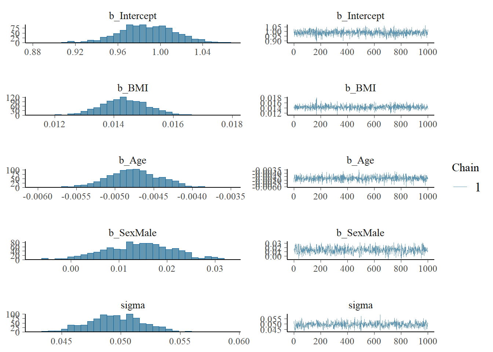
Marginal effects in brms show the predicted effect of each predictor on the response, averaging over the effects of other variables. So you’re essentially asking:
“What does the relationship between BMI and BMD look like, averaged over all values of Age and Sex?”
It gives you a partial effect plot — a clean way to visualize how each predictor (like BMI, Age, or Sex) influences the outcome (BMD), based on the posterior distribution.
Code
# Add raw data overlay
plot(conditional_effects(bmd_model, effects = "BMI"), points = TRUE)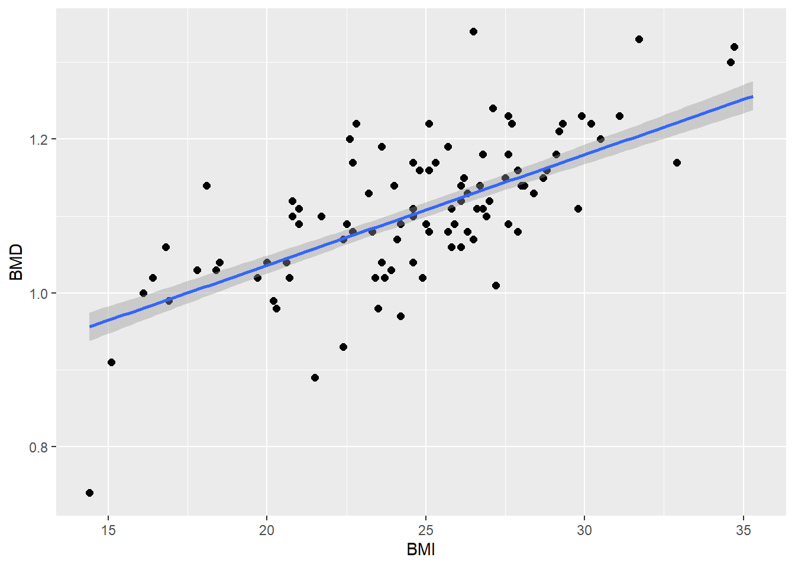
Code
plot(conditional_effects(bmd_model, effects = "Age"), points = TRUE)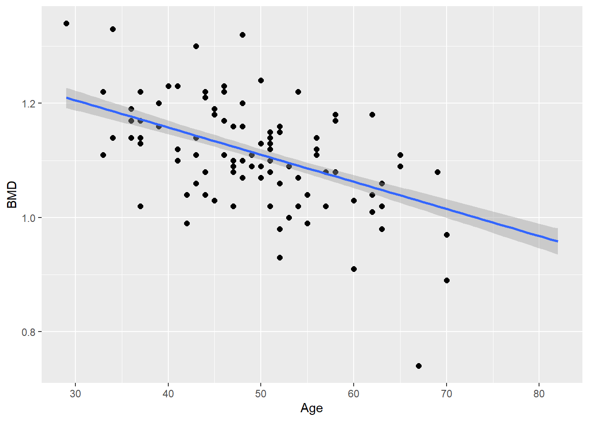
Code
plot(conditional_effects(bmd_model, effects = "Sex"), points = TRUE)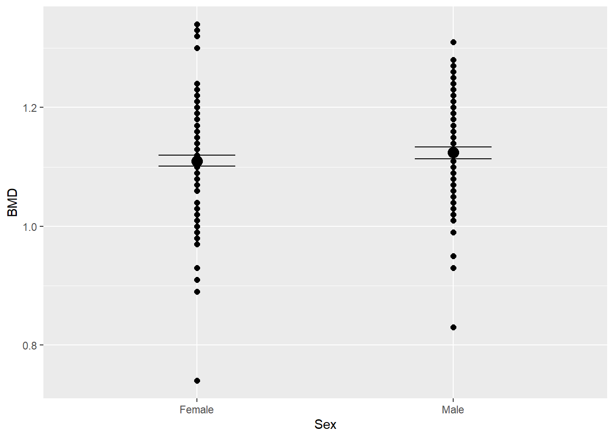
For a continuous variable (e.g. BMI or Age): A smooth line showing how BMD changes as BMI increases
Wider or narrower ribbons depending on how uncertain the model is
For a categorical variable (e.g. Sex): A point estimate (mean BMD) for each group
Error bars showing uncertainty
Code
library(bayesplot)This is bayesplot version 1.11.1- Online documentation and vignettes at mc-stan.org/bayesplot- bayesplot theme set to bayesplot::theme_default() * Does _not_ affect other ggplot2 plots * See ?bayesplot_theme_set for details on theme setting
Attaching package: 'bayesplot'The following object is masked from 'package:brms':
rhatCode
library(brms)
posterior <- as_draws_df(bmd_model)
# Select relevant parameters
mcmc_areas(
posterior,
#pars = c("b_Intercept", "b_BMI", "b_Age", "b_SexMale"),
pars = c("b_BMI", "b_Age", "b_SexMale"),
prob = 0.95 # 95% credible intervals
)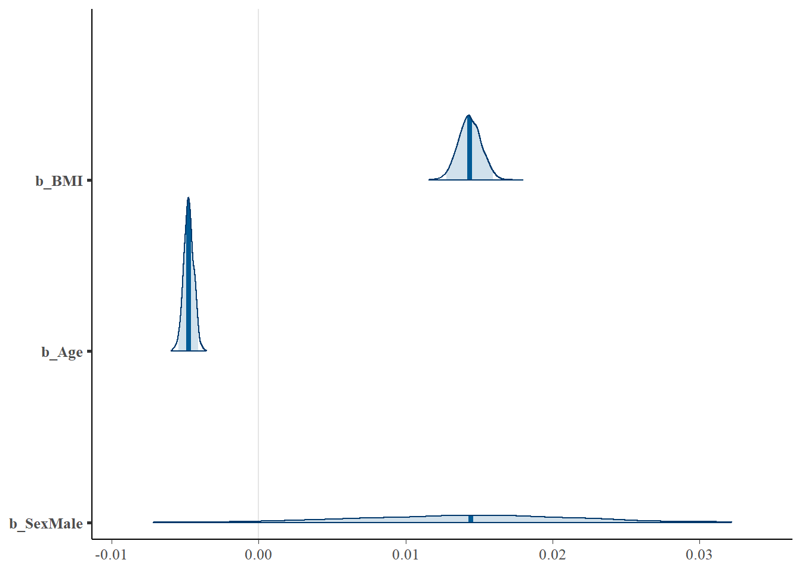
Code
# Posterior intervals using intervals plot
mcmc_intervals(
posterior,
pars = c("b_Intercept", "b_BMI", "b_Age", "b_SexMale"),
prob = 0.95
)Warning: `prob_outer` (0.9) is less than `prob` (0.95)
... Swapping the values of `prob_outer` and `prob`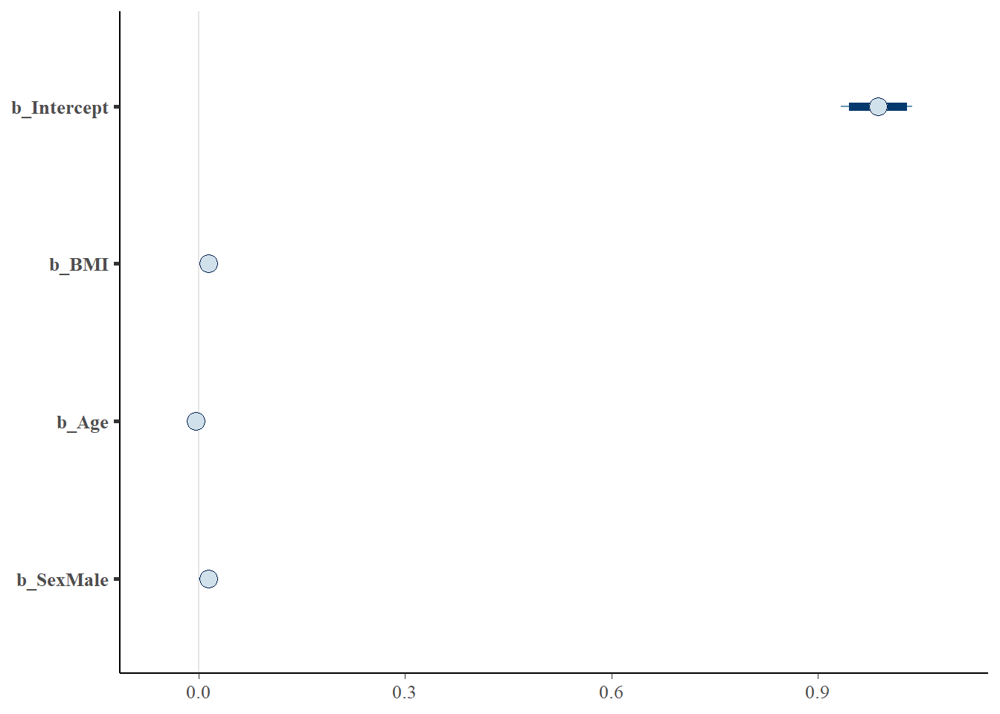
Code
# Good for diagnosing convergence
mcmc_trace(
posterior,
pars = c("b_Intercept", "b_BMI", "b_Age", "b_SexMale")
)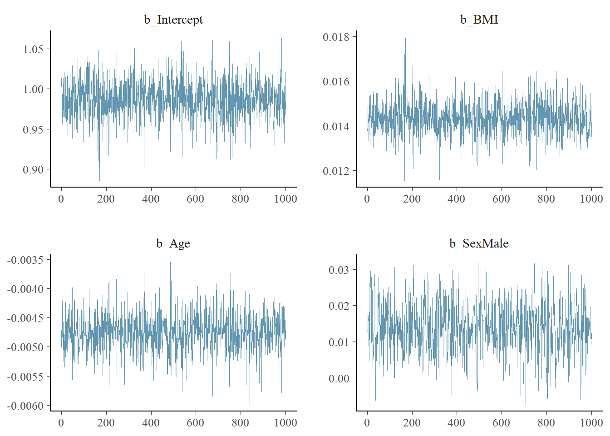
Code
# Posterior predictive check
pp_check(bmd_model)Using 10 posterior draws for ppc type 'dens_overlay' by default.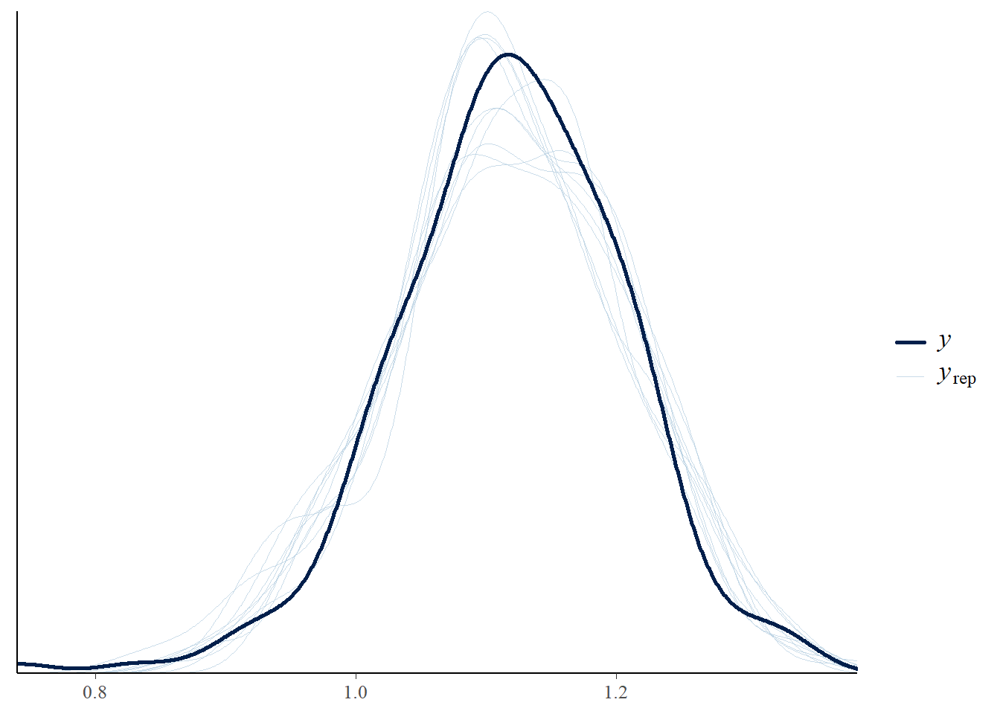
Code
pp_check(bmd_model, type = "hist")Using 10 posterior draws for ppc type 'hist' by default.`stat_bin()` using `bins = 30`. Pick better value with `binwidth`.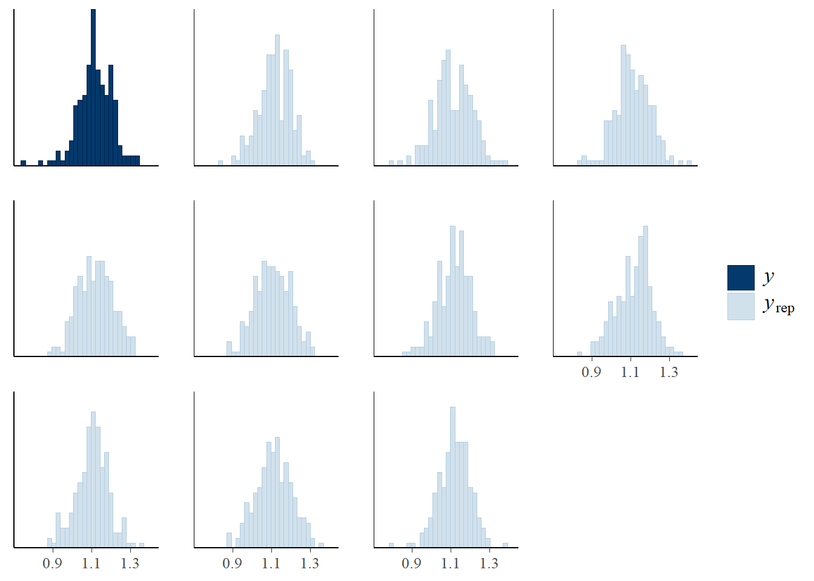
Code
pp_check(bmd_model, type = "boxplot", group = "Sex")Using 10 posterior draws for ppc type 'boxplot' by default.Warning: The following arguments were unrecognized and ignored: group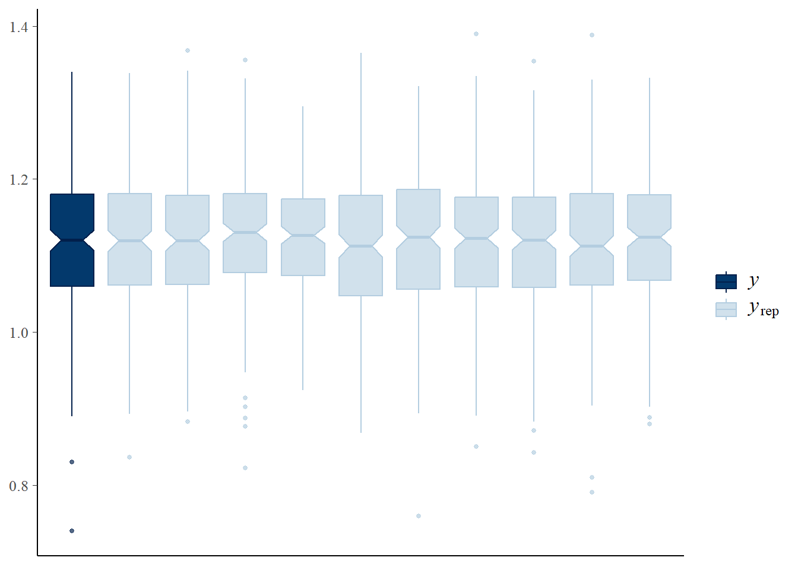
Code
pp_check(bmd_model, type = "scatter_avg")Using all posterior draws for ppc type 'scatter_avg' by default.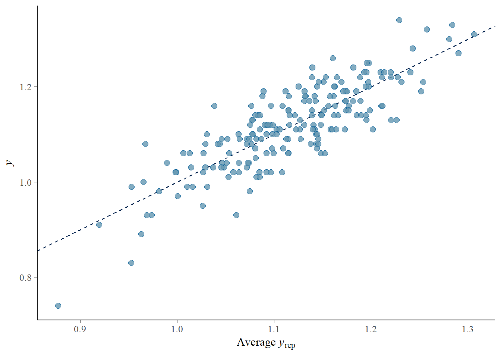
Code
pp_check(bmd_model, type = "ecdf_overlay")Using 10 posterior draws for ppc type 'ecdf_overlay' by default.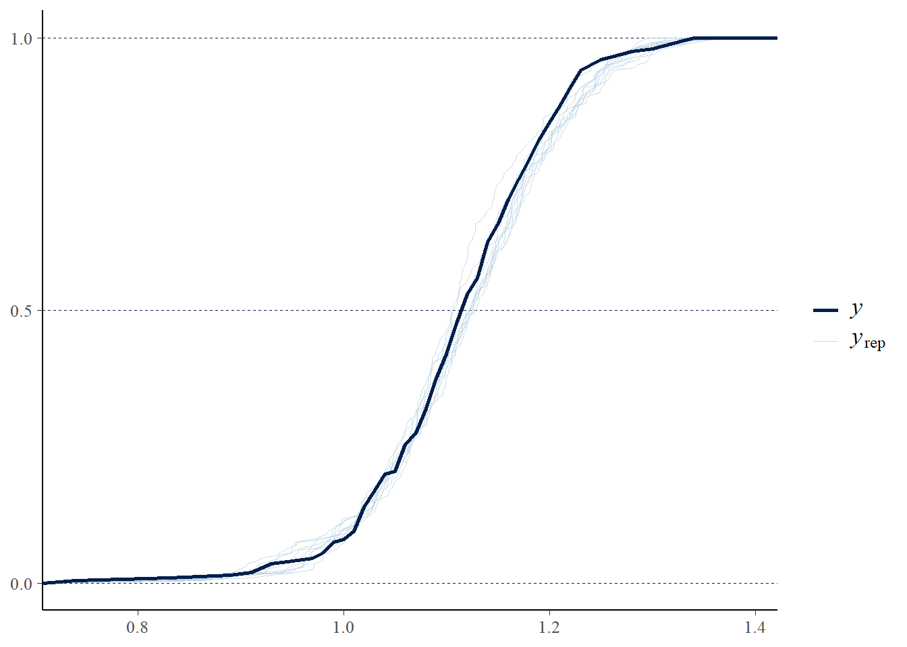
If the posterior predictive plots match the observed data closely, your model fits well.
If the posterior predictive data looks too wide/narrow or misses patterns, you might need:
Better predictors
A different model family
Transformation of variables
5.7 Prior twites
Similarities between IG and students-t. Let’s explain this with Inverse-Gamma distributions with parameters (2,1), i.e., IG(2,1) and Student-t distributions that approximate the IG with parameters (3,0,1), i.e., Student-t(3, 0, 1), where Degrees of Freedom = 3, location = 0 (centered), and Scale = 1. Note that we’ll use the fact that the Inverse-Gamma distribution is the inverse of a Gamma distribution. This means that we can plot the Gamma distributions with appropriate parameters and then invert the axes to simulate the Inverse-Gamma behavior.
Code
library(ggplot2)
library(gridExtra)
Attaching package: 'gridExtra'The following object is masked from 'package:dplyr':
combineCode
# Function to plot Inverse-Gamma approximation (using the inverse of Gamma distribution)
ig_density <- function(alpha, beta, x) {
return(dgamma(1 / x, shape = alpha, rate = beta) / (x^2)) # Inverse-Gamma as 1/Gamma(x)
}
# Plot Inverse-Gamma(2,1)
p1 <- ggplot(data.frame(x = seq(0.001, 20, length.out = 1000)), aes(x = x)) +
stat_function(fun = function(x) ig_density(2, 1, x), col = "red", lwd = 2) +
labs(y = "Density", x = expression(sigma),
title = "Inverse-Gamma(2, 1)") +
theme_minimal()
# Plot Student-t(3, 0, 1)
p2 <- ggplot(data.frame(x = seq(0.001, 20, length.out = 1000)), aes(x = x)) +
stat_function(fun = function(x) dt(x / 1, df = 3) / 1, col = "blue", lwd = 2) +
labs(y = "Density", x = expression(sigma),
title = "Student-t(3, 0, 1)") +
theme_minimal()
# Combine the plots side by side
grid.arrange(p1, p2, ncol = 2)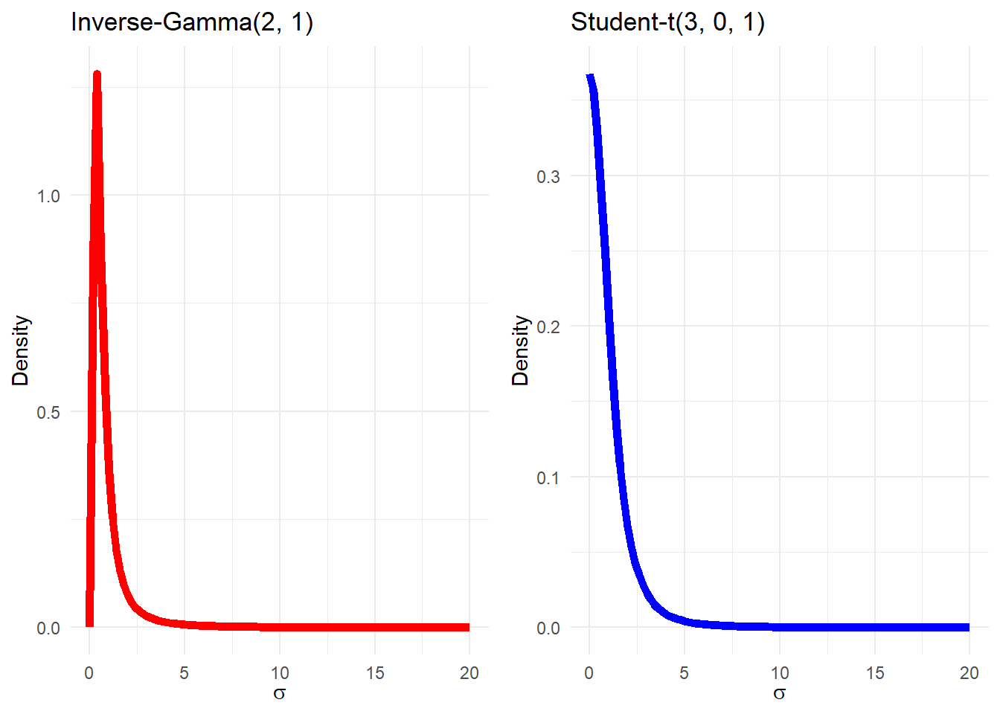
Thus if we
Why do we use Cauchy prior? What are the benefits? Is this weakly informative prior?
Code
bmd_model <- brm(
formula = BMD ~ BMI + Age + Sex,
data = bmd_data,
family = gaussian(),
prior = c(
prior(normal(0, 1), class = "b"), # Priors for slopes
prior(normal(0, 1), class = "Intercept"),
prior(cauchy(0, 1), class = "sigma") # Prior for residual SD
),
iter = 2000,
chains = 1,
cores = 3,
seed = 123
)Compiling Stan program...Start sampling
SAMPLING FOR MODEL 'anon_model' NOW (CHAIN 1).
Chain 1:
Chain 1: Gradient evaluation took 5.2e-05 seconds
Chain 1: 1000 transitions using 10 leapfrog steps per transition would take 0.52 seconds.
Chain 1: Adjust your expectations accordingly!
Chain 1:
Chain 1:
Chain 1: Iteration: 1 / 2000 [ 0%] (Warmup)
Chain 1: Iteration: 200 / 2000 [ 10%] (Warmup)
Chain 1: Iteration: 400 / 2000 [ 20%] (Warmup)
Chain 1: Iteration: 600 / 2000 [ 30%] (Warmup)
Chain 1: Iteration: 800 / 2000 [ 40%] (Warmup)
Chain 1: Iteration: 1000 / 2000 [ 50%] (Warmup)
Chain 1: Iteration: 1001 / 2000 [ 50%] (Sampling)
Chain 1: Iteration: 1200 / 2000 [ 60%] (Sampling)
Chain 1: Iteration: 1400 / 2000 [ 70%] (Sampling)
Chain 1: Iteration: 1600 / 2000 [ 80%] (Sampling)
Chain 1: Iteration: 1800 / 2000 [ 90%] (Sampling)
Chain 1: Iteration: 2000 / 2000 [100%] (Sampling)
Chain 1:
Chain 1: Elapsed Time: 0.244 seconds (Warm-up)
Chain 1: 0.147 seconds (Sampling)
Chain 1: 0.391 seconds (Total)
Chain 1: use rstan, rstanarm or brms
5.8 Model Diagnostics
https://m-clark.github.io/easy-bayes/shinystan.html
shinystan for model diag.
…
Code
1 + 1[1] 25.9 Exercises
sdfads
5.10 Live tutorial and discussion
asdfa
5.11 Summary
asdf
5.12 Preparation for Week 2
In week 2 you will be required to collaboratively complete some exercises. To do this, in week 1 you will be allocated into groups of 3-4 and you are encouraged to meet with your group in week 2 by zoom at a mutually beneficial time. Each group has their own discussion board, which you can use to help organise a meet up time. Interacting, discussing, and working through problems with your peers is an important skill for any biostatistician. This is also nice activity to get to know your peers in this online course.